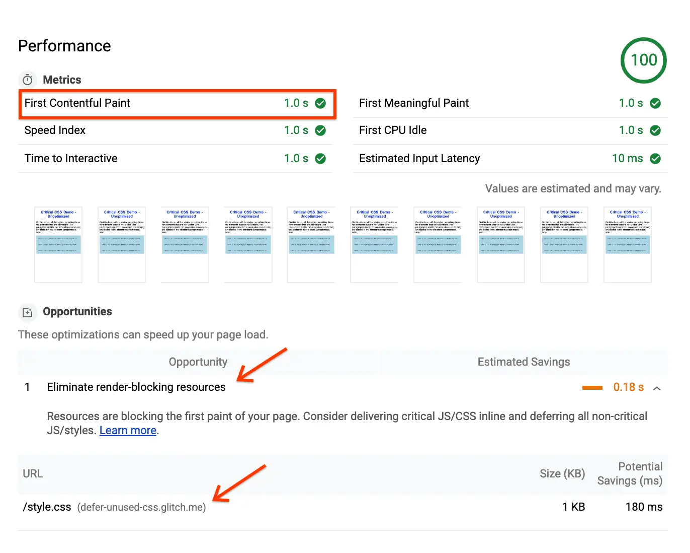

短答
从头部链接的样式表会阻挡渲染，直到浏览器拿到它。
这种行为使 CSS 能在不闪出错误布局的情况下为首次绘制定样式，也使一份用不到的样式表推迟每一个包含它的页面。实验室报告的图是工具点名阻挡资源的画面。它不是对 Mika、某位客户或本营销站的测量，这种画面里印着的任何数字都不是可以抄走的结果。
定义
SEO 健康问的是产品模板上有哪些样式表，以及这些样式表在首屏真正应用了哪些规则。只为首页主视觉而存在的样式表不应该出现在文档页的头部。按模板拆分才是修复。把 CSS 删到页面看起来坏掉则不是。
渲染对爬虫意味着什么变化
去掉或拆分样例模板首屏用不到的样式表。
为首屏内联关键 CSS 可以是后续步骤，写在关于内联的配套说明里。不需要用它来证明可以去掉一份并不适用的样式表。审计样例是一条 URL 的 HTML 头部和该样式表的网络时序，如果只有实验室观察，就标明是实验室观察。

要检查什么
- 从头部链接的样式表
- 不适用于模板首屏的样式表
- 实验室记录被标明为实验室记录
- 取消链接之后一条样例 URL 的头部
- 没有从工具截图抄来的分数
一个结构示例
每个模板都链接一份为已结束活动构建的样式表。覆盖情况显示它在产品页上大部分未使用。健康修复是在活动 URL 之外停止链接它。产品页自己的样式表保留。不记录总等级。
它不声称什么
解除样式表的阻挡不保证排名或引用。
Mika Visibility 把它归到哪里
Mika Visibility 把渲染当作 SEO 健康问题：当模板依赖 JavaScript 时，重要 HTML 能否在有脚本和无脚本两种情况下被获取并比较。这种比较不是 GEO 审计，也不是市场覆盖计划。发现要附在样例 URL 上。模板改完之后的再审计，用来确认修复。
报告图是工具示意。其中的数字不是这里点名的任何公司的结果。
常见问题
为什么头部样式表会阻挡绘制？
从头部链接的样式表会阻挡渲染，直到浏览器拿到它。
应该去掉或拆分什么？
去掉或拆分样例模板首屏用不到的样式表。
解除 CSS 阻挡能保证排名吗？
解除样式表的阻挡不保证排名或引用。
下一步
做一次结构化的 SEO + GEO 审计，查看健康发现、增长缺口和可以执行的蓝图。
更清晰的实体、答案、证据和上下文，会让页面更容易被理解与引用。任何回答产品中的结果都不作保证。